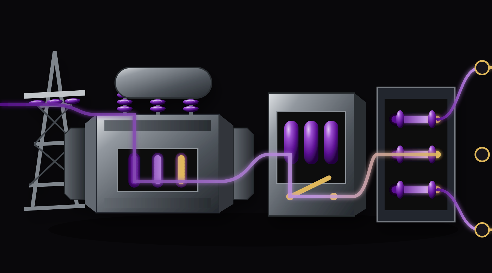
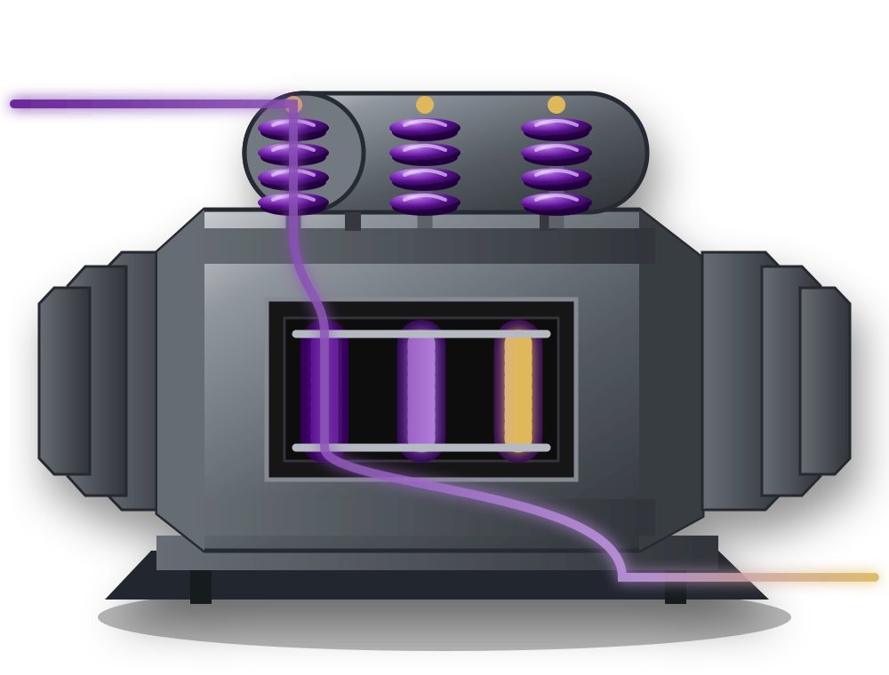
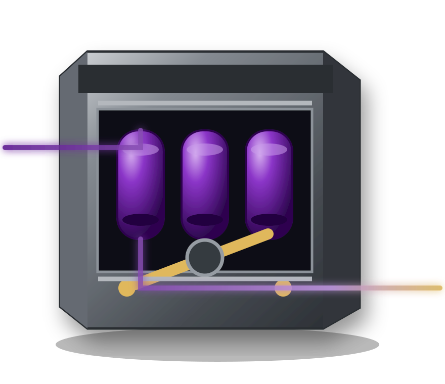
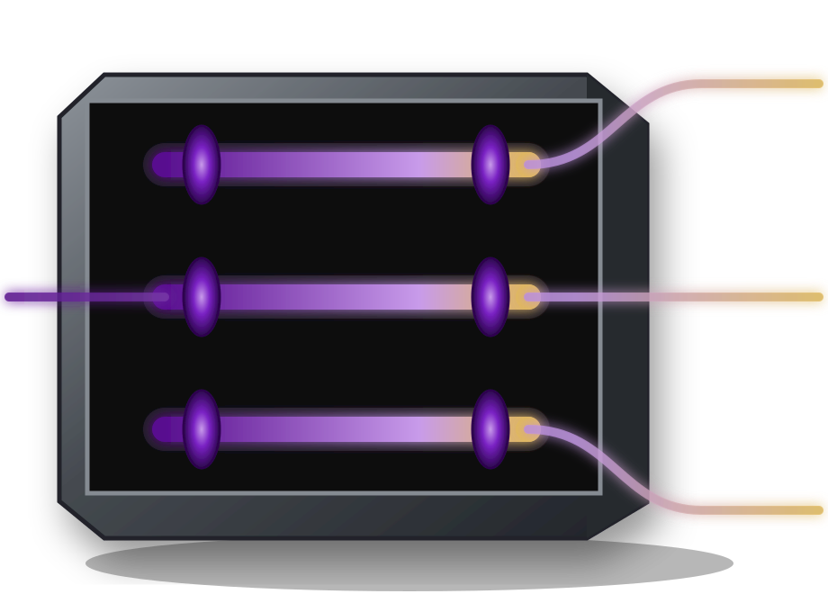
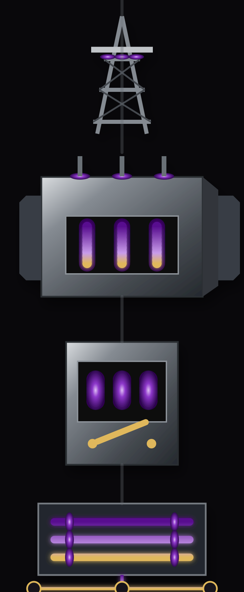

Connected desktop world
One supply system rather than a catalogue of unrelated drawings. It is authored for the flipped homepage: equipment left, proof and action right.

Transformer
The material and silhouette master: three bushings, cooling banks and visible winding chamber.

Breaker
One physical closing mechanism and three contact chambers, without relay-panel noise.

Three-phase distribution
Monumental busbars branch directly into three commissioned feeders.

Purpose-built mobile world
A vertical cabinet-like composition—not a cropped or enlarged desktop drawing.
